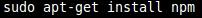
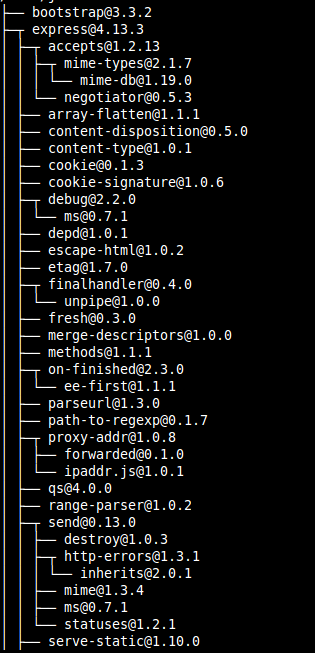
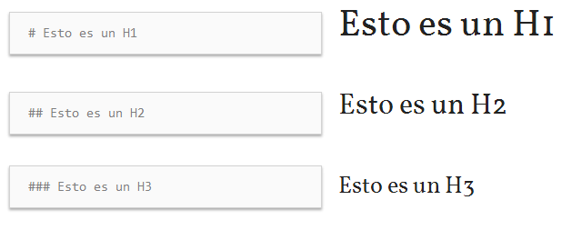
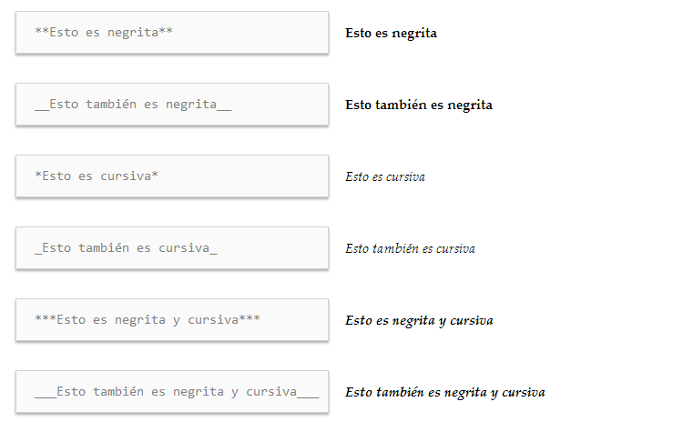
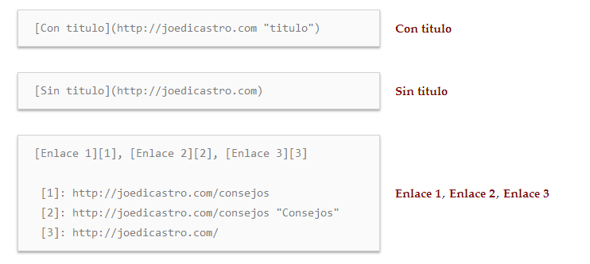
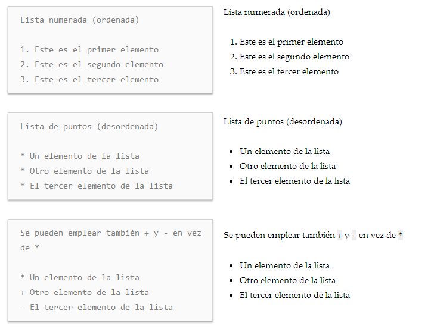
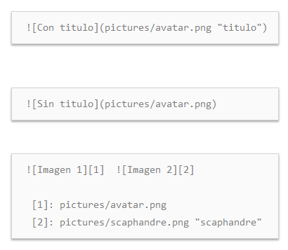

Practica 1 para la asignatura "Desarrollo de Sistemas Informaticos" en la cual se despliega un tutorial acerca de Markdown y tambien la instalacion de distintas herramientas de trabajo: NodeJS, Express, Atom, c9, pandoc...
Se han aplicado una serie de comandos para la instalacion de node.js
-sudo apt-get install nodejs
-sudo apt-get install npm. Npm es el sistema de manejo de paquetes y gestion de modulos de node.js.

Este ejemplo lista los paquetes que actualmente estan instalados en un determinado directorio en un formato de arbol:

Se ha utilizado el siguiente comando para la instalacion de express:
-npm install express --save
Para la instalacion de git se han utilizado los siguientes comandos:
-sudo apt-get install git
Cloud9 combina un potente editor de codigo online con un completo espacio de trabajo de Ubuntu en la nube. Soporta mas de 40 lenguajes y es sencillo de manejar.
Se ha hecho uso del siguiente comando para la instalacion de Atom:
-sudo add-apt-repository ppa:webupd8team/atom. La instalacion es necesario realizarla mediante un PPA de webupd8team.
Una vez actualizados los paquetes de Ubuntu para que este reconozca aquellos que se hayan incorporado recientemente, ejecutamos el siguiente comando en la consola:
-sudo apt-get install atom.
Sintaxis:
- Encabezados:

- Tipografia:

- Enlaces:

- Listas:

- Imagenes:

- Tablas: